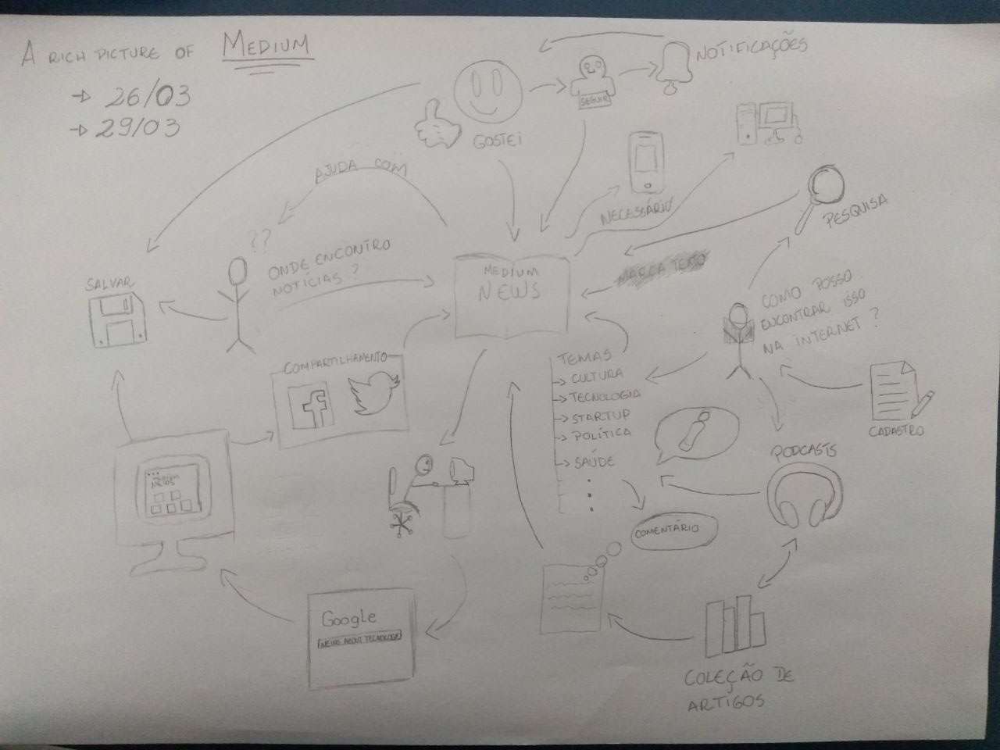

Versionamento de edições
| Data | autor | Descrição | Versão |
|---|---|---|---|
| 30/03/2019 | Matheus Blanco e Pedro Rodrigues | Adição de texto base e richpictures v.1 | 0.1 |
| 03/04/2019 | William Elias Alves | Inserção do texto no mkdocs | 0.2 |
| 08/04/2019 | William Elias Alves | Inserção da tabela de versionamento | 0.3 |
RichPictures
Definição
O Rich Picture é um modelo informal e fácil de se entender, podendo até ser contruído juntamente com o cliente. Auxilia na identificação de processos, atores envolvidos, e o relacionamento dos processos e atores.
Modelos
Os modelos foram dividos em dois pontos de vista diferentes, o ponto de vista do autor e o ponto de vista do leitor.
Ponto de vista do Leitor
Modelo 1 - Versão 1
- Versão 2

- Versão 3

- Versão Final

Modelo 2
- Versão 1

- Versão 2

- Versão final

Ponto de vista do Escritor
Modelo
- Versão 1
- Versão 2
_MatheusSallesBlanco.jpg)
- Versão 3
- Versão final

Modelos 2
- Versão 1
- Versão 2
_Import-story_PedroRodrigues.jpg)
- Versão Final
Modelo 3
- Versão 1
- Versão 2
_New-Story_PedroRodrigues.jpg)
- Versão Final